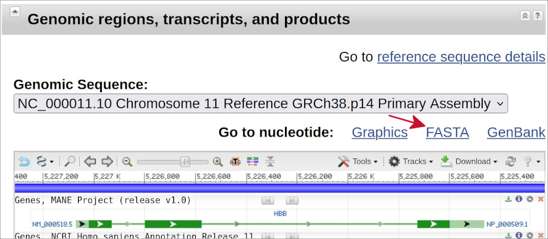
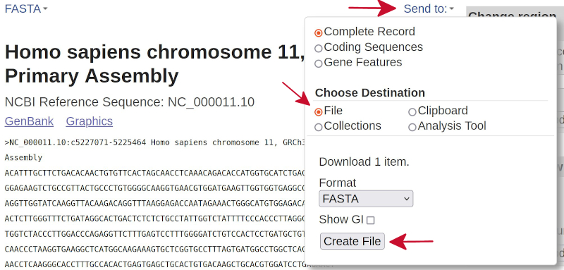

The learning objectives for this practical are:
For the problems in which you have to implement a program that solves some arithmetic problem that we have solved in class at the blackboard, you should have already one working solution from that class on paper. If you don’t, please ask a colleague for one. Try to focus the time of this practical in addressing the technical challenges of running a Python program and correcting run-time errors.
Whenever you are stuck with an error, please consult the section entitled “Debugging” from practical 4.
To do this practical you need an installation of Python version 3. You can find the instructions in the setup link on how to install Python version 3 in your system. Once Python is installed, you should be able to call it from the shell in the terminal window. You can check whether that is possible by typing:
$ which python
$ python --versionIt may happen that you have two Python installations, one corresponding to version 2.x and another to version 3.x. In that situation the previous command may say that your Python version is 2.x and to access the version 3 you need to call the executable python3. Try then for instance:
$ python3 --versionIf this is your case, then whenever the executable python is invoked in the rest of this practical, please use python3 instead. Make a directory for this practical, called practical5, and store there the files generated during the practical.
The Wikipedia page for relatively prime numbers says:
In number theory, two integers a and b are relatively prime, mutually prime, or coprime if the only positive integer that evenly divides (is a divisor of) both of them is 1. One says also a is prime to b or a is coprime with b. Consequently, any prime number that divides one of a or b does not divide the other. This is equivalent to their greatest common divisor (gcd) being 1.
Implement a program in Python that asks for two positive integer numbers and says whether they are relatively prime or not, providing some message with the print() function.
We say that a positive integer number x is cool if this number is equal to the sum of any sequence of increasing consecutive positive integer numbers smaller or equal than x, starting on 1. For instance, number 1 is cool because the only positive integer number smaller or equal than 1 is 1 itself; number 2 is not cool because neither 1 nor 1+2 are equal to 2; number 3 is cool because 3=1+2. Until 10, numbers 4, 5, 7, 8 and 9 are not cool. However, 6=1+2+3 and 10=1+2+3+4 are indeed cool.
Implement a program in Python that asks for one positive integer number and says whether the given number is cool or not, providing some message with the print() function.
Programming instructions performing a specific task, such as the calculation of a particular value or decision, can be bundled together under a so-called function; see the slides on functions from this lecture.
Edit the previous two programs and, in each of them, bundle together the code into a function called main() and put a call to that function main() at the bottom of the file, i.e.:
def main() :
## CODE OF YOUR PYTHON PROGRAM
## INDENTED TO BECOME BUNDLED
## INTO A FUNCTION CALLED main()
## THIS IS THE SO-CALLED "BODY"
## OF THE FUNCTION
main() ## THIS IS THE "CALL" TO THE FUNCTION main()Verify that the program runs in exactly the same way as before you did these modifications. Now edit each of the programs again with the following two new updates:
main() function and place them right before the call to the main() function.main() function with the variables that store the input, i.e., writing main(x) if x were the variable that stores the input. At this point, verify that the program runs in exactly the same way as before.Replace the calls to the print() function, printing the result message, by an assignment of that result message to a variable called res. Insert the following line as last line in the body of the main() function:
return(res)Replace the call to the function main() by:
print(main(x))assuming that x is the name of the variable that stores the input.
Verify that the program runs in exactly the same way as before these modifications. Try to understand the flow of the input information into the code that makes the actual calculations and the flow of the output from the main() function to the screen.
Programs such as Unix commands, may take the so-called command-line arguments, which allow programs to read different input each time we run them For instance, the cp file-copying command requires two arguments, the file to copy and the target directory or file where it should be copied, for instance:
$ cp ~/Download/rawData.zip .Command-line arguments allow us to re-use programs with different input and enable automatizing workflows. We will see in this section how can we take command-line arguments through the code in our own Python programs.
We can use the Python module sys (to refresh the concept of a Python module, see the corresponding section in this lecture) to fetch argument values given by the user in the command line. To illustrate this functionality, create a text file called showargs.py and add the following lines:
import sys
i = 0
while i < len(sys.argv) :
print(f"argument vector position {i}: {sys.argv[i]}")
i = i + 1If you call this program from the Unix command line with the arguments give me 5, you should be getting the following output:
$ python showargs.py give me 5
argument vector position 0: showargs.py
argument vector position 1: give
argument vector position 2: me
argument vector position 3: 5Try to understand what are the contents of the vector argv in the module sys in the previous execution mode. Once you have understood that, try to complete the following exercise.
Make a new version of the Python program that decides whether two positive integer numbers are relatively prime with the following characteristics:
Instead of asking the user to enter two values, it should take them from the Unix command-line arguments.
The code doing the actual calculation on whether two given numbers are relatively prime should be encapsulated into a function called main(x, y) with two arguments x and y corresponding to the two numbers to be evaluated; see the slides on functions from this lecture. The function main(x, y) should return a character string value set to yes when x and y are relatively prime and no when they are not. This function should not print anything on the screen.
When the program is called from the command line without the two arguments corresponding to the two positive integer values to evaluate, then for a program called, e.g., relprime.py, the user should get a message like:
$ python relprime.py
error: relprime.py <x> <y>When the program is properly called from the command line with the two arguments corresponding to the two positive integer values to evaluate, then the program should call the previously defined main(x, y) function, take its result and print it in the terminal screen.
Following the explanation from Wikipedia, in bioinformatics the FASTA format is a text-based file format for representing sequences of either nucleic acids or amino acids. Here, we want to learn how can we read from a Python program the DNA sequence of a gene stored in FASTA format within a text file and make some simple summaries of the DNA content from that gene. We are going to illustrate that task with the hemoglobin subunit beta (HBB) gene, which is a gene coding for a protein that forms part of haemoglobin, the molecule responsible for transporting oxygen in red blood cells of almost all vertebrates.
First, let’s download the FASTA file of the DNA of the human HBB gene following these steps:
Scroll down to the section entitled “Genomic regions, transcripts and products” and click on the link called FASTA, as indicated by the red arrow in the following image.

In the next page, click on the link called Send to:, from the pull-down menu click on File and finally on the button Create File, as indicated by the red arrows in the following image.

sequence.fasta will be downloaded from your browser, probably into your downloads directory. Move it into the folder that you are using for this practical under the name HBB.fa. This is the FASTA file containing the DNA of the human HBB gene.Examine the first lines of this FASTA file with the Unix head command. The result should be as follows:
$ head HBB.fa
>NC_000011.10:c5227071-5225464 Homo sapiens chromosome 11, GRCh38.p14 Primary Assembly
ACATTTGCTTCTGACACAACTGTGTTCACTAGCAACCTCAAACAGACACCATGGTGCATCTGACTCCTGA
GGAGAAGTCTGCCGTTACTGCCCTGTGGGGCAAGGTGAACGTGGATGAAGTTGGTGGTGAGGCCCTGGGC
AGGTTGGTATCAAGGTTACAAGACAGGTTTAAGGAGACCAATAGAAACTGGGCATGTGGAGACAGAGAAG
ACTCTTGGGTTTCTGATAGGCACTGACTCTCTCTGCCTATTGGTCTATTTTCCCACCCTTAGGCTGCTGG
TGGTCTACCCTTGGACCCAGAGGTTCTTTGAGTCCTTTGGGGATCTGTCCACTCCTGATGCTGTTATGGG
CAACCCTAAGGTGAAGGCTCATGGCAAGAAAGTGCTCGGTGCCTTTAGTGATGGCCTGGCTCACCTGGAC
AACCTCAAGGGCACCTTTGCCACACTGAGTGAGCTGCACTGTGACAAGCTGCACGTGGATCCTGAGAACT
TCAGGGTGAGTCTATGGGACGCTTGATGTTTTCTTTCCCCTTCTTTTCTATGGTTAAGTTCATGTCATAG
GAAGGGGATAAGTAACAGGGTACAGTTTAGAATGGGAAACAGACGAATGATTGCATCAGTGTGGAAGTCTNext, create a new text file called tallynt.py with the following Python program:
f = open("HBB.fa")
line = f.readline() ## read the first line from HBB.fa
print("The DNA sequence from gene:")
print(line.strip()) ## print the first line from HBB.fa
seq = "" ## seq will store the whole gene DNA
while (line) : ## while 'line' is not empty
line = f.readline() ## read the next line from HBB.fa
seq = seq + line.strip() ## concatenate that line to 'seq'
v = list(seq) ## convert 'seq' into a vector 'v'
n = len(v) ## calculate the length of vector 'v'
print(f"has a total of {n} nucleotides")This Python program reads the lines from HBB.fa and concanates them into a single character string called seq, which afterwards is converted into a vector v, from which we calculate its length, corresponding to the total number of nucleotides in the DNA encoding the gene HBB. It includes a call to the following functions:
open(), which opens a text file and returns an object that allows one to read lines from that file using the method f.readline(), for some file object f.str.strip(), where str is some character string object and it removes any leading and trailing spaces and newlines from that string.When you run this program, the output must be as follows:
$ python tallynt.py
The DNA sequence from gene:
>NC_000011.10:c5227071-5225464 Homo sapiens chromosome 11, GRCh38.p14 Primary Assembly
has a total of 1608 nucleotidesNotice that you could also count the nucleotides using a Unix shell command line as follows:
$ grep -v '>' HBB.fa | fold -1 | wc -l
1609Try to understand what is doing each bit of the previous Unix command-line. Could you figure out why this command line is giving a number that is one unit larger than what our Python programe gives?
Next, improve the Python program with the following two enhancements:
Enable the program to take the name of the FASTA file as a first argument in the command line, so that it can work with any FASTA file containing DNA from any gene. Run it, for instance, with the DNA from the the angiotensin converting enzyme 2 (ACE2) gene, which encodes a protein that acts as a receptor for the spike glycoprotein of the human coronavirus SARS-CoV-2, the causative agent of coronavirus disease-2019 (COVID-19), e.g.:
$ python tallynt.py ACE2.faEnable the program to take a second argument where we specify one of the four possible nucleotides (A, C, G or T) and it calculates the number of occurrences of that nucleotide in the DNA sequence of the gene, e.g.:
$ python tallynt.py HBB.fa AYou can verify whether the calculation is correct by doing it also in Unix with the following command line:
$ grep -v '>' HBB.fa | fold -1 | grep A | wc -l
411Try to understand what is doing each bit of the previous Unix shell command line. Could you think of a way to tally all four nucleotides in the same command line?